SEO-Accessibilité
Le réferencement et l'accessibilité du site ont été effectués sur plusieurs étapes. Dans un premier temps J'ai fait un audit complet du site. Ensuite j'ai analysé les problèmes rencontrés avant d'établir une liste de recommandations J'ai procédé à l'optimisation. J'ai établi un rapport d'optimisation qui compare les deux versions du site l'ancienne et la nouvelle version optimisée. Pour tester la vitesse de chargement des pages, pour vérifier si le site est accéssible à la plus part des utilisateurs, pour trouver des mots-clés compétitifs, pour minifier les fichiers css et js et pour ajuster la taille des images,j'ai utilisé les outils ci-après
- gtmetrix
- Google Page Speed
- webAIM WAVE
- www.minifier.org
- Photoshop
- kwfinder(trial)
Analyse
Ci-après les résultats d'analyse:
Analyse sur gtmetrix de la page d'accueil:
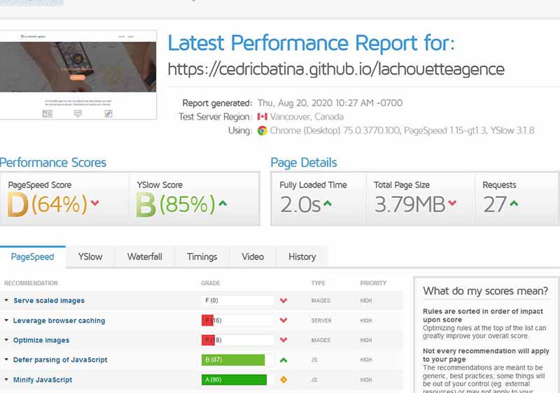Analyse sur gtmetrix de la page de contact:
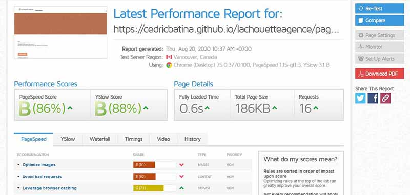Analyse sur Google Page Speed de la page d'accueil
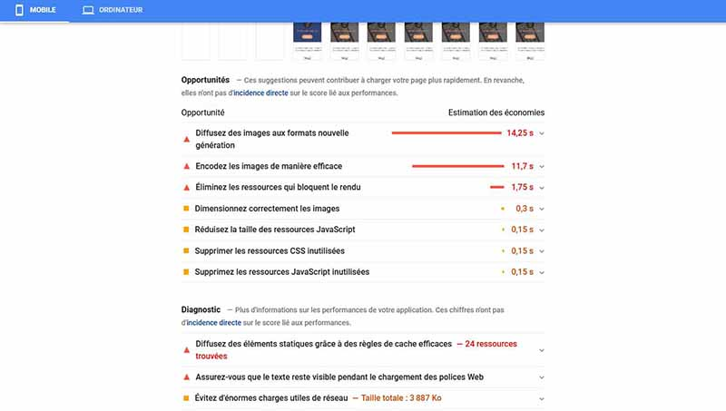Analyse sur Google Page Speed de la page de contact:
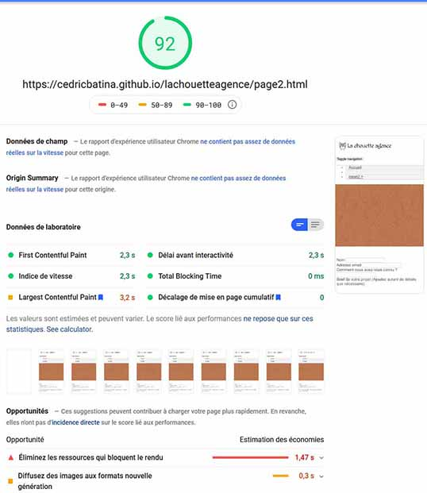Analyse sur webAIM WAVE de la page d'accueil
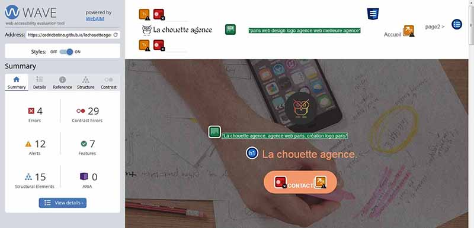Analyse sur webAIM WAVE de la page de contact
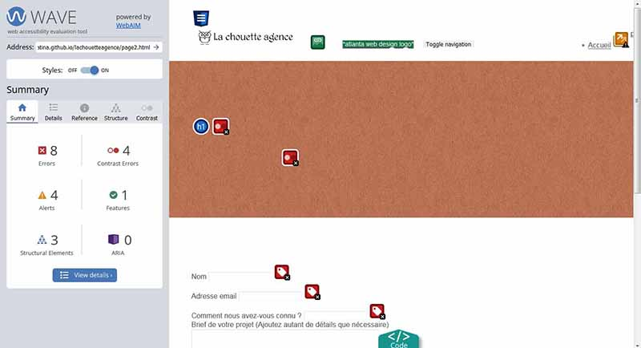Problemes - SEO
Voici l'interprétation des résultats et quelques uns des problèmes rencontrés.
- Plusieurs fichiers js et css prenent beaucoup trop de temps pour se charger
- Des erreurs de saisie
- Mauvaise pratique visant à tromper Crawler
- La langue du site n'est pas définie
- Plusieurs liens vides et inutiles
- Le code n'est pas indenté
- etc...
J'ai réalisé un document PDF: Audit SEO qui énumère xplique les problèmes, où on les rencontre et la bonne pratique à adopter, afin pour aller plus loin dans l'analyse.
Problèmes - Accessibilité
J'ai rencontré plusieurs problèmes d'accessibilité. Ceux-ci sont repertoriés dans un document PDF: accessibilité
Recommandations
Suite à l'analyse des performances du site la chouette agence, il ressort une série de mésures nécessaires à adopter pour un reférencement optimal et une accéssibilité à un large public
La liste des recommandations SEO à mettre absolument en place pour un meilleur classement dans les moteurs de recherche se trouve dans le dossier suivant fichier PDF: Recommandations - SEO
Le fichier PDF: Recommandations - Accessibilité quant à lui repertorie des recommandations obligatoires pour
pour être aux normes sur l'accéssibilité
Rapport d'optimisation
Après analyse et optimisation selon les recommandations SEO et d'accéssibilité, je note plusieurs différences entre l'ancienne version et la nouvelle Voici les résultats générés par mes outils d'aide au reférencement cités ci-dessus.
Analyse de la page d'accueil sur gtmetrix, nous montre les résultats suivants:
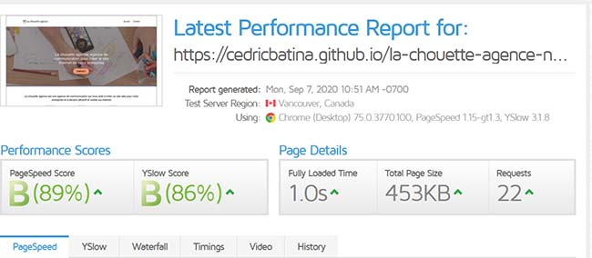Ci-après les résultats de la page de contact:
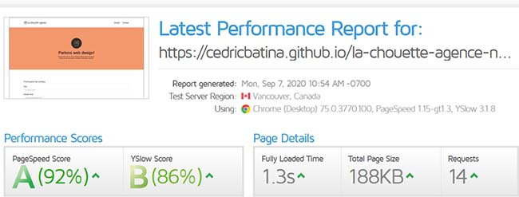Les résultats de la page d'accueil sur Google Page Speed sont analysés comme suit:
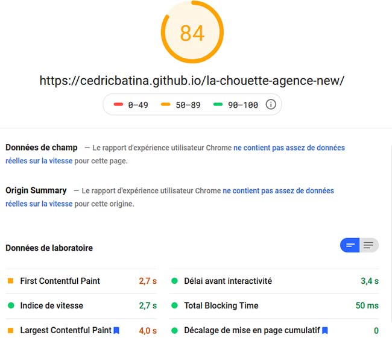Enfin les résultats de la page de contact sur Google Page Speed:
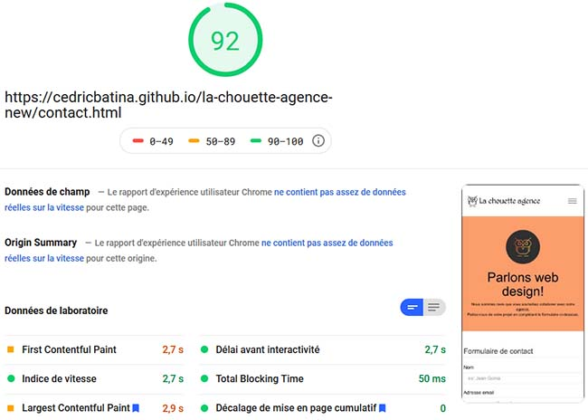Ainsi les deux images ci-dessous repésentent les analyses faites par webAIM WAVE, respectivement sur la page d'accueil et ensuite sur la page de contact
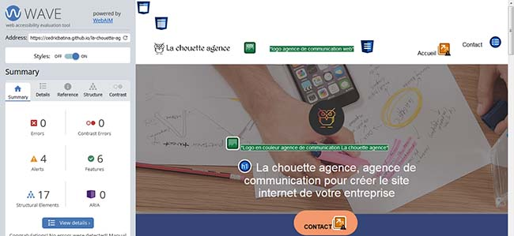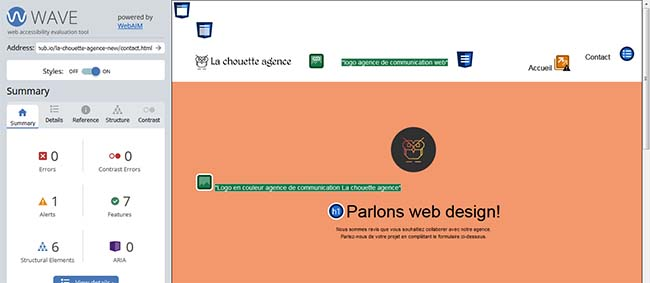
Après analyse des résultats, j'ai tiré plusieurs conclusions. A première vue, les résultats obtenus sont relativement satisfaisants. Je vous invite à voir ensemble l'interprétation approfondie de ces résultats en consultant mon fichier PDF: Rapport d'optimisation
En plus des outils, cités plus haut pour affectuer le reférencement SEO et travailler sur l'accessibilité du site, je me suis reféré les trois cours d'
openclassrooms:
- Augmenter mon trafic grâce au reférencement naturel
- Optimiser le SEO en améliorant les performances techniques
- Concevoir du contenu web accessible